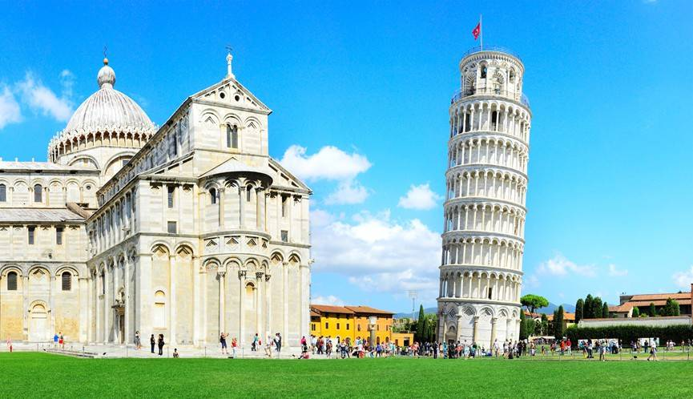
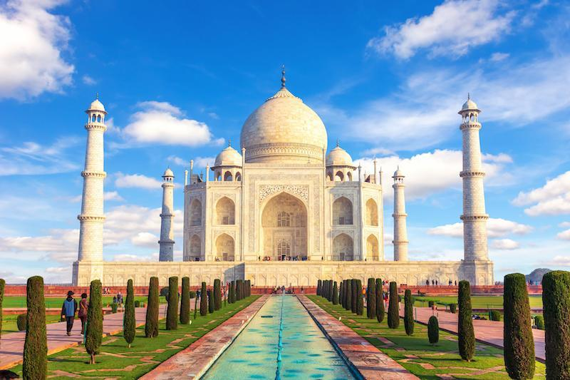
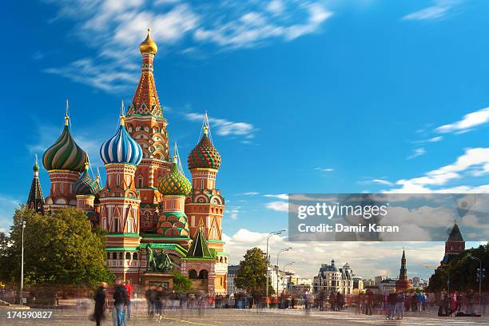
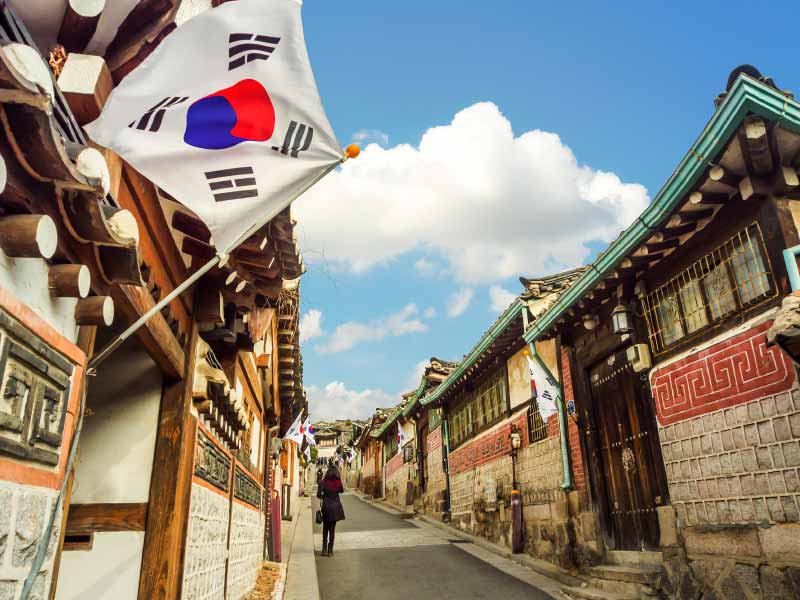

義大利
位於南歐，是一個以歷史、藝術、美食與時尚聞名的國家。首都為 羅馬，官方語言是義大利語，使用歐元（EUR）。
開始探險

印度
南亞大國，文化多元，泰姬瑪哈陵是代表性建築。
開始探險
法國
歐洲文化大國，以浪漫的巴黎和艾菲爾鐵塔聞名，藝術、美食與時尚皆享有盛名。
開始探險
台灣
位於東亞的島嶼國家，以科技產業、夜市美食和自然景觀聞名。台北的 101 大樓與多元文化展現出台灣的現代與傳統融合。
開始探險
加拿大
北美國家，以楓葉旗聞名，擁有壯麗的自然景觀如洛磯山脈與尼加拉瀑布，多元文化社會是其特色。
開始探險
日本
東亞島國，以富士山和櫻花聞名，融合傳統文化與現代科技。
開始探險
中國
東亞大國，歷史悠久，以長城、故宮和兵馬俑等世界文化遺產聞名。
開始探險
德國
位於歐洲，以柏林的國會大廈（Reichstag）和豐富的歷史文化著稱，是歐盟的重要成員國。
開始探險

俄羅斯
橫跨歐亞大陸，是世界上面積最大的國家。以莫斯科的聖瓦西里大教堂、克里姆林宮和西伯利亞大地聞名，展現獨特的歷史與文化。
開始探險

韓國
東亞國家，以首爾的現代都市風貌與傳統韓屋街區並存著名。韓流文化、科技產業與美食也讓韓國在全球具有影響力。
開始探險